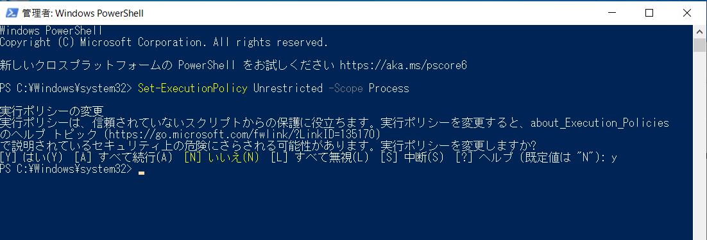

CMCollector スクリプト実行による情報採取
Configuration Manager (ConfigMgr) / WSUS の初期調査では CMCollector スクリプト による資料採取をお願いさせていただいております。
調査に必要なシステム情報やイベント ログ等の各種情報を、自動で採取可能なスクリプト ファイルによる情報採取をお願いします。 (情報採取に伴うシャットダウンや再起動は行われません)。
後述の手順で CMCollector.ps1 を実行し、出力された zip ファイルを弊社までお寄せくださいますようお願いいたします。
本 スクリプト では 性能解析や ネットワーク 解析のための資料は採取しておりません。そのような解析が必要な場合は担当者より解析用資料の採取手順を別途ご案内しますので、ご承知置きくださいますようお願い致します。
本 スクリプト で採取している資料については本 ページ 末に概要をまとめておりますので、ご参照ください。
ConfigMgr クライアント がお手元に無い場合
ConfigMgr クライアントの情報採取の際に、エンドユーザー様がご利用されている等、お手元に クライアントが用意できない場合については、リモート から一部のログを採取する方法がございます。CMCollector で採取している内容ほど充実はしておりませんが、こちらで採取したログにて調査開始であることもございますので、お試し頂ければと存じます。
Configuration Manager エージェント資料のリモート採取手順について
https://jpmem.github.io/memlog/configmgr/initial/remote_ccm.html
CMCollector 採取手順
事前準備
以下の URL からダウンロードした CMCollector.zip を採取対象の端末にコピーします。なお、本スクリプトは適宜アップグレードを行っておりますので、お手数をおかけしますが常に最新のスクリプトをダウンロードしお使いくださいますようお願いいたします。
https://github.com/microsoft-jpcssmem/ConfigMgr/raw/master/CMCollector.zipスクリプトの格納先として、資料採取対象のコンピューターに C:\script フォルダを作成ください。
ダウンロードした CMCollector.zip を展開し、上記の C:\script フォルダーに CMCollector.ps1 と CMUtil.ps1 を以下のように配置します。
Powershell を管理者として起動します。

起動した PowerShell コンソールで以下のコマンドを実行し、PowerShell スクリプトを実行できるように、実行ポリシーを変更します。なお、本実行ポリシーは開いた Powershell コンソール内のみで有効となります。
1 | Set-ExecutionPolicy Unrestricted -Scope Process |

情報採取手順
- 管理者として実行にて起動した PowerShell コンソールで以下のコマンドを実行し、情報採取を開始します。
1 | cd C:\script |
- Hit enter to stop: が表示された PowerShell コンソールで Enter キーを押下します。情報採取を開始します。

※以下は取得中画面です。

。
- 完了後、PowerShell コンソールに出力されたパスにある zip ファイルを取得します。

出力例）
1 | The collected data is "C:\Script\ConfigMgr_L01-CL04-CLD_20220607_183600.zip" |
- 上記の zip ファイルを弊社までご提供ください。
採取に失敗した場合
逐次開発を進めておりますが、お客様の環境によっては本スクリプトが正常に動作しない場合がございます。以下のような場合は、採取に失敗しておりますので、お手数をおかけして恐縮でございますが、その旨ご連絡頂くと共に、下記でご案内する手順にて手動にて資料採取くださいますようお願い致します。なお、本手動採取手順はCMCollector の内容を全て代替しているものではございません。そのため、他にも追加で資料採取をお願いすることがございます。予めご容赦くださいますようお願い致します。
失敗例
- Zip ファイルが作成されない
- Zip ファイルの内容に ConfigMgr\CMServer もしくは ConfigMgr\CMClientと いったフォルダが存在しない
- Zip ファイルの内容に ConfigMgr\msinfo32.nfo ファイルが存在しない
失敗時の手動資料採取手順
CMCollector による情報採取に失敗したように見受けられる場合は、お手数ですが追加で以下の手順で手動による情報採取にご協力くださいますようお願いいたします。
Configuration Manager の場合
WSUS サーバーの場合
CMCollector の資料採取内容
以下の資料を採取しております。
ConfigMgr サーバー 共通
- ConfigMgr レジストリ
- ConfigMgr サーバー関連 WMI レポジトリ情報(一部)
ConfigMgr サイト サーバー
- [ConfigMgr サーバー インストール フォルダ]\Logs
- ConfigMgr インストール時ログ
ConfigMgr サイト システム
- [ConfigMgr サイト システム インストール フォルダ]\logs
ConfigMgr 管理ポイント
- [ConfigMgr 管理ポイント インストール フォルダ]\logs
- IIS ログ (最新3日分)
ConfigMgr 配布ポイント
- [ConfigMgr 管理ポイント インストール フォルダ]\logs
- IIS ログ (最新3日分)
ConfigMgr コンソール
- ConfigMgr コンソール ログ
ConfigMgr ソフトウェア 更新ポイント / WSUS サーバー
- WSUS サーバー ログ
- WSUS サーバー IIS 設定
- WSUS サーバー IIS ログ (最新 3日分)
- WSUS サーバー サーバー 設定
- WSUS サーバー 「製品と分類」一覧
- WSUS サーバー クライアント 一覧
ConfigMgr クライアント
- ConfigMgr クライアント レジストリ
- ccmsetup レジストリ
- C:\Windows\CCM\Logs
- C:\Windows\ccmsetup\Logs
- C:\Windows\SMSCFG.ini
- クライアント 設定関連 WMI レポジトリ
- クライアント 各種情報 WMI レポジトリ (一部)
ConfigMgr クライアント / Windows Update Agent 共通
- WIndows Update 関連ログ
全環境共通
- msinfo32
- 各種証明書情報
- グループ ポリシー
- IP アドレス 設定
- 起動 プロセス 情報
- サービス 起動状況
- BITS ジョブ リスト
- 環境変数一覧
- フィルター ドライバー 情報
- Azure AD サインイン情報
- ログイン ユーザー 情報
- OS イベントログ
- 関連製品 イベントログ
- Windows Update 関連レジストリ
- M365 等関連レジストリ